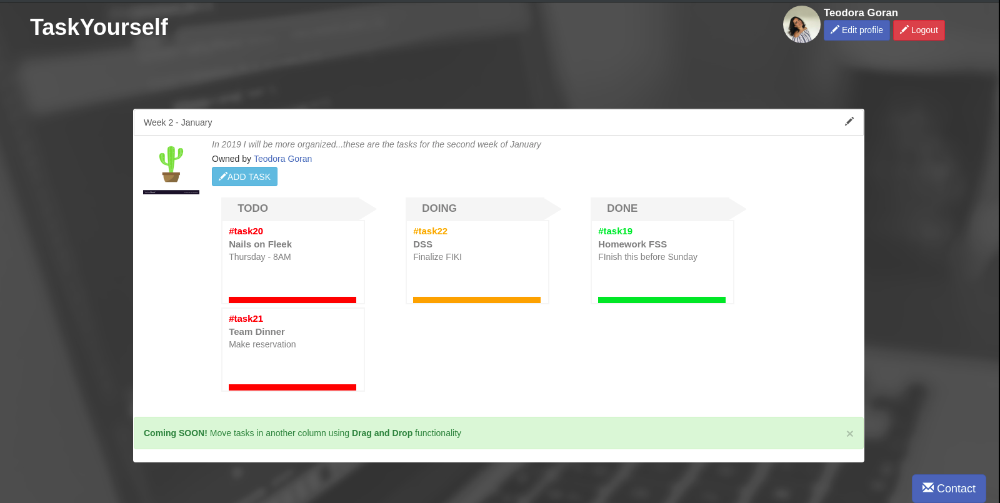
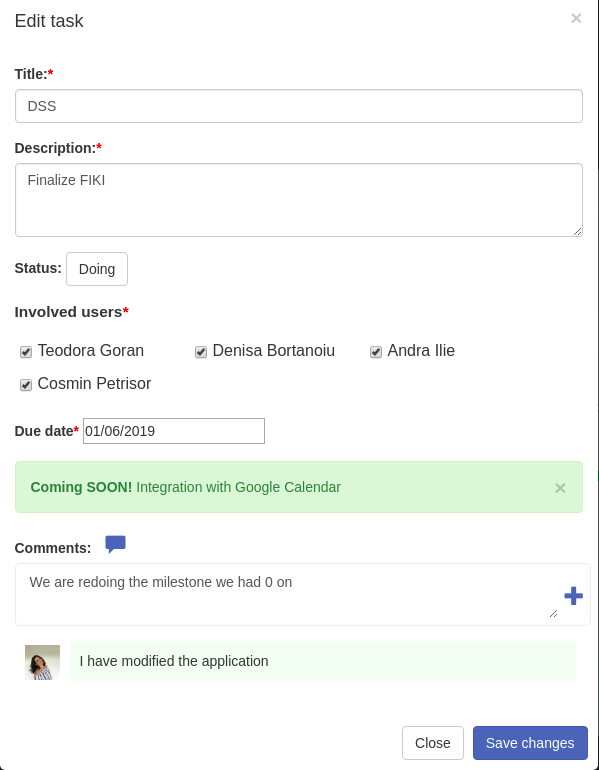
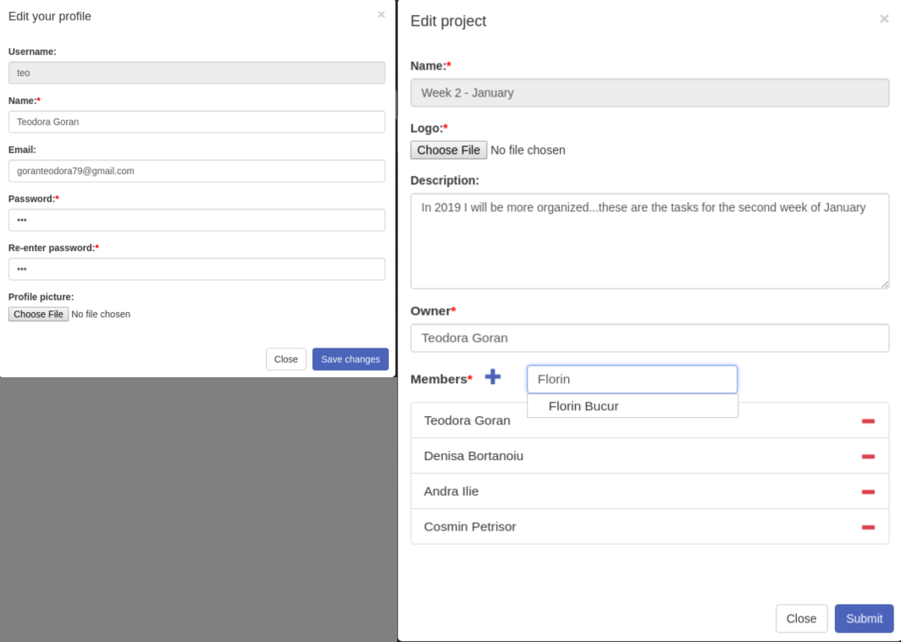
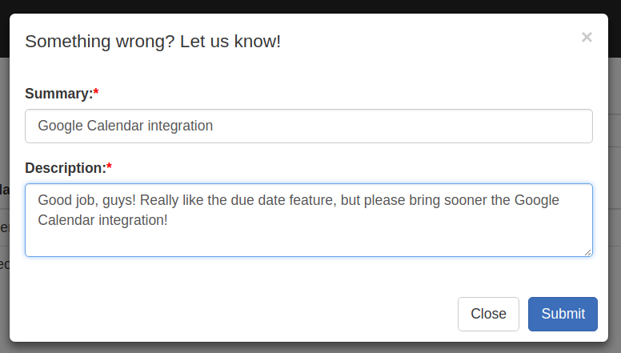
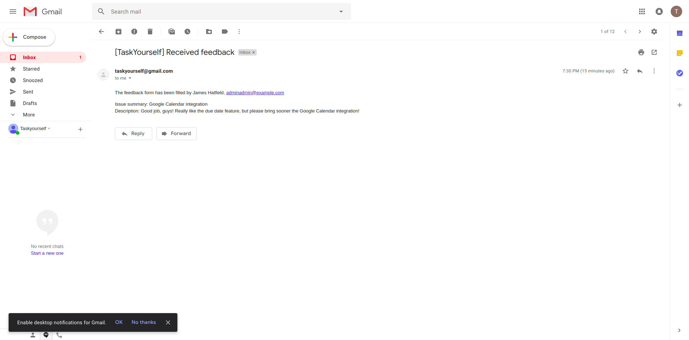

This milestone consists of implemeting an MVP. When developing it, we had in mind what
Key characteristics
As generally accepted, an MVP has three key characteristics:
- enough value that people are willing to use it or buy it initially
- demonstrates enough future benefit to retain early adopters
- provides a feedback loop to guide future development
Initial value
After the first validation stage, we have uncovered that our prospective users want the most the following features:- boards
- deadline notification
- ability to colaborate with team members
We decided to build up on that and first create a management system that incorporates boards and the ability to colaborate with team members.
The user can add tasks for themselves or other users within multiple projects and monitor their status on the board. As it was promised on the Landing page, the flow is simple and lets users focus on their work, so we provide only three columns: ToDo, Doing and Done. Also, we decided to add visual signals for each column to mark the completion stage of the tasks.

Team collaboration was rated as one the most important aspect in a task management system by users completing our form in the first validation stage. Therefore, we provide this ability via the comment section of each task, where users can start a conversation and leave notes for their team to follow. Moreover, the tasks can be edited in more detail, and the user can check the Due Date, the assigned/involved users in the task completion, but also start a conversation in the comment section.

Aldo these features are the so-called "stars" of the MVP, we decided to also include features that allow users to personalize their profiles and projects. We believe these are features somewhat to be expected in all applications today. For easy of usage, we provide the users autocompleted fields where possible.

Future benefits
As it might have become apparent in the previous snapshots, there are messages displaying what our future releases might hold. We have decided to display them directly in the interface in order to reward active users and keep them interested in the application.
So, even though the deadline notification feature was not implemented yet, the user knows to expect it when clicking a task. Another benefit we aim to add as an improvement is drag-and-drop over the board. This comes to level us to the competition that holds market share at the moment (as described in the previous milestone, applications like Trello are big competitors that allow this feature).
Feedback loop
It is important to assure the users that their opinions are heard at this early stage. To keep in touch with them, we decided that all pages should display a Contact form. This form is available via a button on the bottom of the page:
When filling out the form, the user feedback is sent to our address, taskyourself@gmail.com:

The email contain the issue expressed by the user, and also an indentification method for them (username and email address for future communication from our part):
